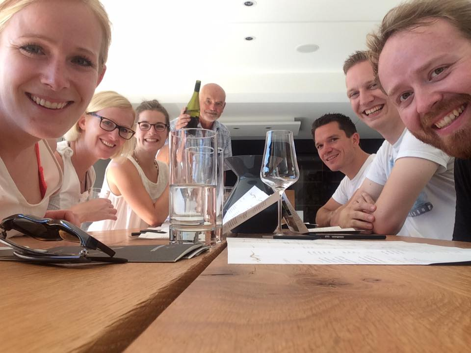
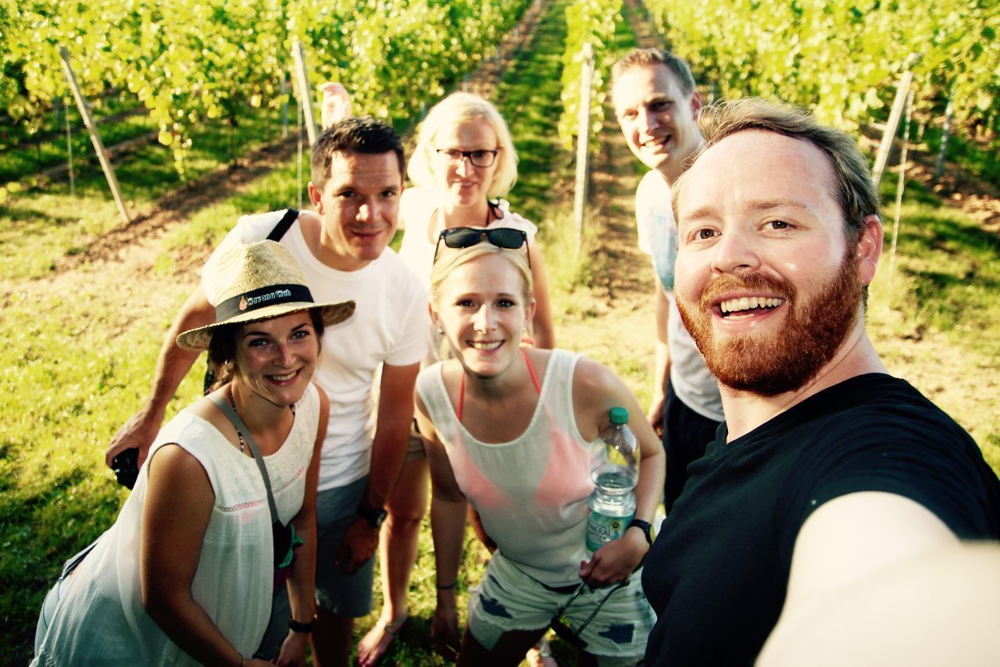

German Wine Country - A Taste of Landau and the Pfirmann Weingut
A Weekend In The German Wine Country
After a short 3 hour drive south on the German Autobahn from Düsseldorf, just past Frankfurt, I found myself standing in a rolling green field of my favorite plant: the Vitis! More commonly known as grapevines! Yes, I am in Landau, the heart of German Wine Country. I am here this weekend with some friends to do some wine tasting at the Weingut Pfirmann (on Facebook). The winery is a small, 4th generation family-owned and operated establishment with chic style on every inch of the bottle, the equipment, and the tasting room.
If you are able to make a trip to Landau I recommend staying at the Heiligenthaler Hof Apartments and Rooms which are super nice and come at a very low price tag. Even better, the restaurant here is Greek and some of the best food I’ve ever eaten. All the staff were super friendly and treated us like family, even giving us a few rounds of ouzo when we helped them fix their lights.
If you are planning a trip to Landau or have been here before, please let me know about it by leaving a comment below or by reaching me directly at @JudsonLMoore.
Weingut Pfirmann Taste Testing
From our hotel to the winery was a nice 5km walk through rolling hills of the vineyard. We decided to walk because the weather was spectacular and the countryside is truly something out of the movies. We took our time, snapping some photos along the way, but within an hour we arrived at Weingut Pfirmann.
Upon arrival, we were cheerfully greeted by the owner and wine master, who didn’t waste a second to get a chilled glass of their Secco Rosé into our hands. After the warm walk, it was a welcomed start to the afternoon festivities. Spoiler alert: this was my favorite wine of the day, but I can’t say it didn’t get bonus points for excellent timing!
After a brief tour of the facilities and a crash course of the winemaking process, we moved into the tasting room and the main event got underway.

photo credit: Kathrin Rupprath
Weingut Pfirmann Wine List and Impressions
Now, I have to admit, I took notes on my thoughts for each wine, but aside from having a wrecked pallet long before I got to the 11th bottle, I also just don’t have the vocabulary for properly describing wines. Therefore, I have merged my personal thoughts with some descriptions I found on EuroWineKontor to help me out. You can also buy the wine online from that site.
Download the entire Weingut Pfirmann 2016 wine list here (PDF).
***** denotes my top picks
-
SECCO, Secco Rosé, 11.5% VOL* - …
-
2015 Landschneckenkalk Riesling, 13% VOL - Nose of ripe peach, citrus fruits, and fresh herbs. On the tongue, limestone, minerals, and hints of green apple.
-
2015 Buntsandstein Riesling, 12.5% VOL - Nose of red apple, vineyard peach, apricot, mango, grapefruit and red currant. Palate: very precise, elegant, juicy with a crisp freshness and a slightly earthy flavor.
-
2015 Sauvignon Blanc, 13% VOL - The bouquet smells very clear of fresh herbs, some gooseberry, and hints of nuts. On the palate is a delicious fruit with a crisp acidity and a nice minerality that give a great vitality.
-
2015 Grauer Burgunder, 13% VOL* - In the nose and palate first falls a delicate fruity aroma of white stone, and then turns to a peach and apricot accent.
-
2015 Kalkmergel Grauer Burgunder, 13.5% VOL* - Flavors of stone fruit as a fresh peach, plum, apricot, a nice flavor and very fine nuances of nuts.
-
2015 Kalkgestein Chardonnay, 13.5% VOL - Fruity, buttery, with a velvety feel that’s atypical of dry white wines.
-
2015 Gewürztraminer, 13% VOL - Smells very aromatic and spicy with ripe grapes, roses, exotic fruits and a hint of cinnamon. On the palate, very full, vigorous, with a certain force. Intensely aromatic.
-
2015 Rieslaner Auslese, 7.5% VOL* - …
-
2015 Rosé, 12% VOL* - On the nose aromas of strawberries, but also notes of peach and passion fruit. Palate has a crisp freshness with a lively acidity component, but well balanced. In addition, little by little notes of sweet cherries, and peaches return at the end.
-
2012 Cabernet-Merlot dry, 14% VOL - Full-bodied with herbal notes. Fruity, spicy. Very soft, less tannic than Cabernet Sauvignon.
[gallery type=”rectangular” link=”none” ids=”5249,5250,5251,5300”]
The Walk Back To Town
It is hard to say that there was a part of this day’s experience which was better than the wine. However, the walk home was what the day was really about. We spent hours soaking in the German wine country by wandering through the vineyards and rolling hills. Time with friends, enjoying the evening air, and a beautiful sunset, this is what makes life rich and memories grand.
I highly recommend that you make a visit to the German wine country and to Landau. Take your family, your friends, or just yourself. You are going to have a great time! Have you been to Landau before? Are you thinking about making a trip there? I would love to hear your thoughts in the comments below, or reach out to me directly at @JudsonLMoore.
